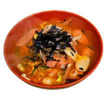
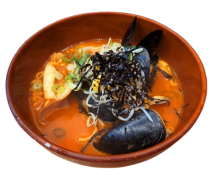

틈새메뉴
틈새라면의 메뉴를 확인해 보세요!
Main Menu
맵기 단계 선택이 가능합니다(계떡제외)
-

- 빨계떡
- 고춧가루와 계란, 떡이 들어간 빨계떡 라면 특유의 기름기나 냄새가 나지 않고 오묘한 양념의 배합에서 나오는 얼큰한 맛을 잊지 못해 20년 단골이 생기게 됩니다.
-

- 빨부대
- 부대찌개 맛이 그대로 살아있는 빨부대 틈새의 얼큰한 고춧가루로 기존의 부대찌개가 가진 고유한 맛까지 그대로 품고 있습니다.
-

- 빨해떡
- 빨갛고 떡과 해물이 들어간 빨해떡 매콤한 맛과 해물의 시원한 맛이 어우러지고 쫄깃한 오징어와 시원한 홍합은 신선한 바다 내음을 전하고 매콤한 맛이 답답한 가슴속까지 시원하게 해줍니다.
-

- 계떡
- 계란이랑 떡이 들어간 유일하게 안매운 계떡 매운 것을 잘 못 드시는 여성분들, 어린이 나이 드신 분들도 부담없이 즐길 수 있습니다. 된장찌개 같은 한국의 또 하나 의 맛, 바로 구수한 맛입니다.
sidemenu
라면과 같이 먹으면 더욱 맛있습니다!